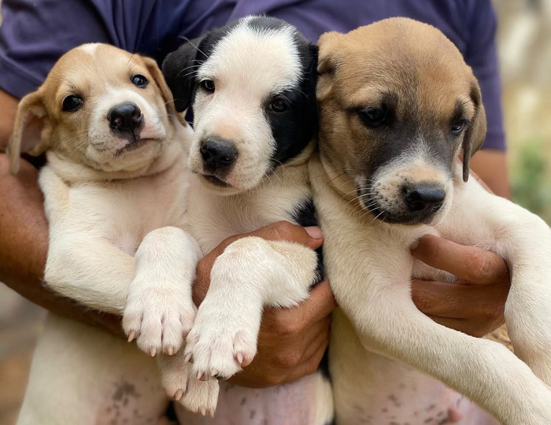
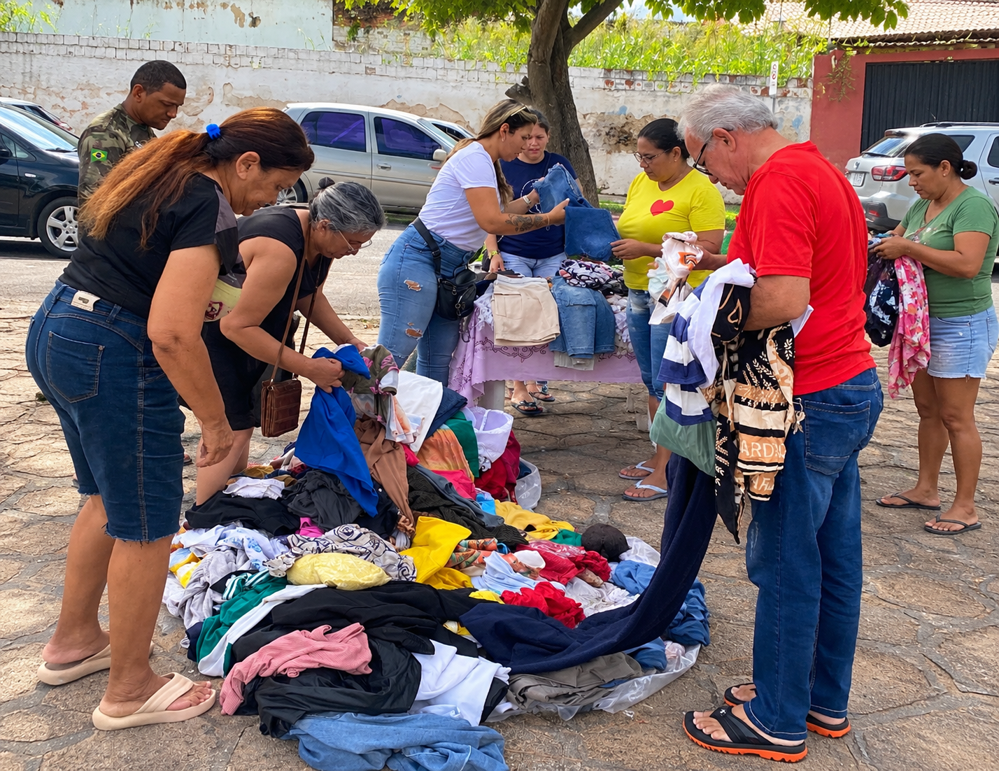

🐶
Nossa missão
Promover o bem-estar animal e ajudar cães e gatos a encontrarem famílias responsáveis.
QUEM SOMOS
Somos uma ONG fictícia criada para incentivar a adoção responsável, o cuidado e a proteção dos animais em Cajazeiras, no sertão da Paraíba.
Promover o bem-estar animal e ajudar cães e gatos a encontrarem famílias responsáveis.
Uma equipe fictícia de voluntários, cuidadores e apoiadores unidos pela causa animal.
Uma cidade com mais respeito aos animais, menos abandono e mais adoções conscientes.
ENCONTRE UM AMIGO
Estes são personagens ilustrativos criados para a apresentação acadêmica.
NOSSO TRABALHO
Exemplos fictícios de ações que uma ONG pode desenvolver em nossa cidade.

Proteção e abrigo temporário para animais em situação de abandono e resgatados.
Campanhas educativas sobre cuidados com animais no calor.

O valor arrecardado vai todo para comprar ração e alimentar anjos de quatro patas .
ADOÇÃO RESPONSÁVEL
Conheça os animais e avalie qual combina com sua rotina.
Entenda as necessidades do pet e os cuidados necessários.
Prepare um ambiente seguro para o novo integrante da família.
FAÇA PARTE DESSA CAUSA
Pequenos gestos podem transformar a vida de muitos animais.
Ração e outros materiais são essenciais para os cuidados diários.
Ajude na divulgação, em campanhas e no acolhimento dos animais.
Adote com responsabilidade ou compartilhe a causa com amigos.
Este é um projeto acadêmico fictício. Não realizamos arrecadação de dinheiro nem recebemos doações reais.
FALE CONOSCO
📍 Cajazeiras – Paraíba
Entre em contato para conhecer o projeto e saber mais sobre adoção responsável.
ONG e animais fictícios. Dados de contato reais não foram informados.
Entrar em contato agora